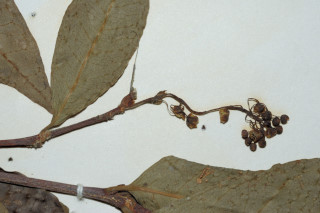
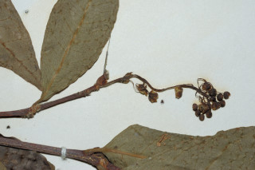

Images :

 

| Habit : | Trees up to 5 m tall. |
| Leaves : | Leaves simple , alternate or subopposite , sometimes spiral ; petiole 0.2-0.3 cm long, lamina 4-9.5 x1.6-4.2 cm, elliptic-rhomboid , apex acute with obtuse or retuse tip, base acute , margin entire , glabrous ; secondary_nerves ca. 9 pairs; tertiary_nerves admedially_ramified . |
| Inflorescence / Flower : | Flowers greenish yellow, unisexual , monoecious ; male flowers in slender racemes ; female flowers solitary , axillary or fascicled . |
| Fruit and Seed : | Capsule , shallow lobed , ca. 1 cm long; fruiting_calyx_lobes spreading; seeds 3. |